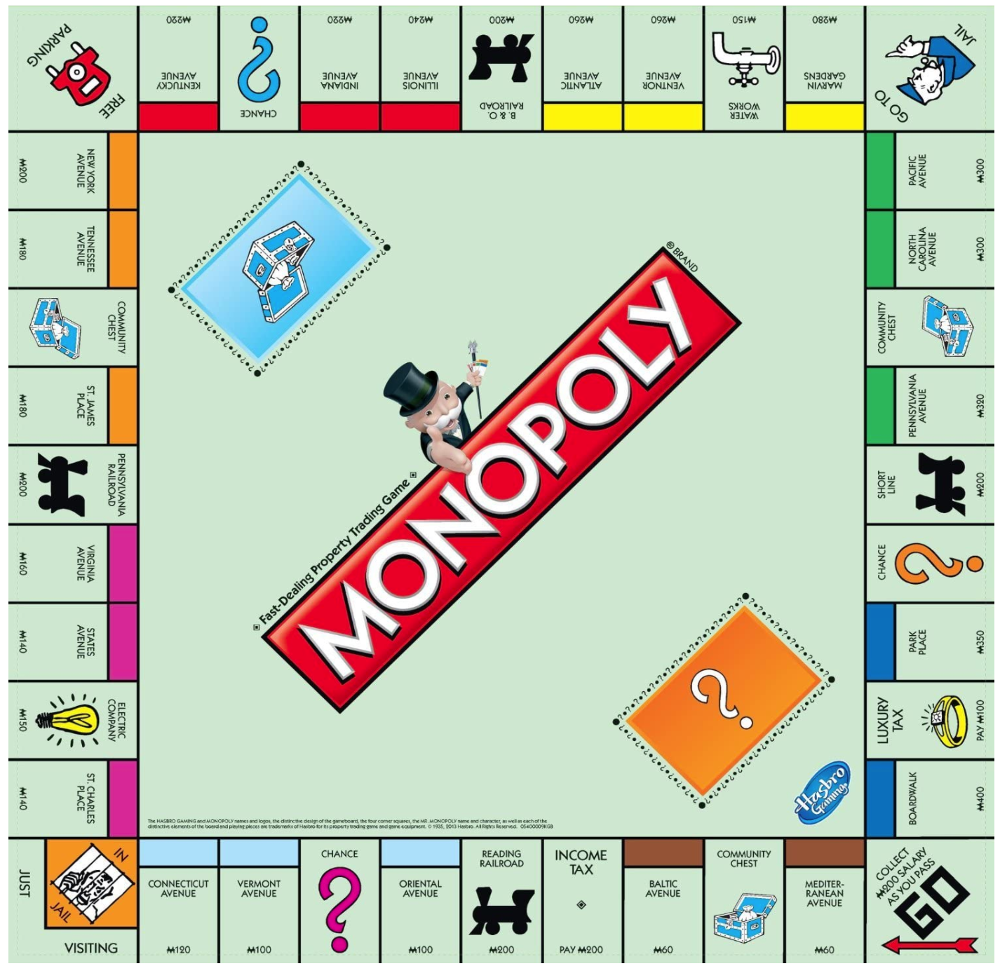
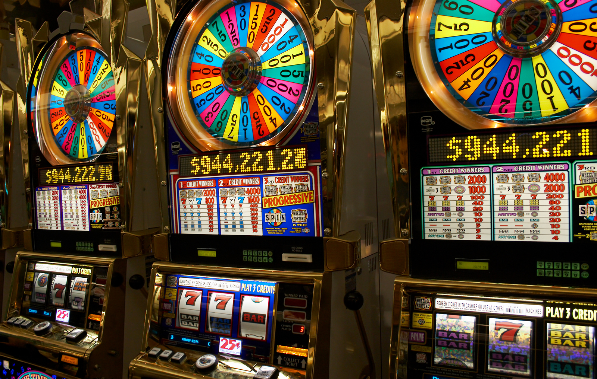
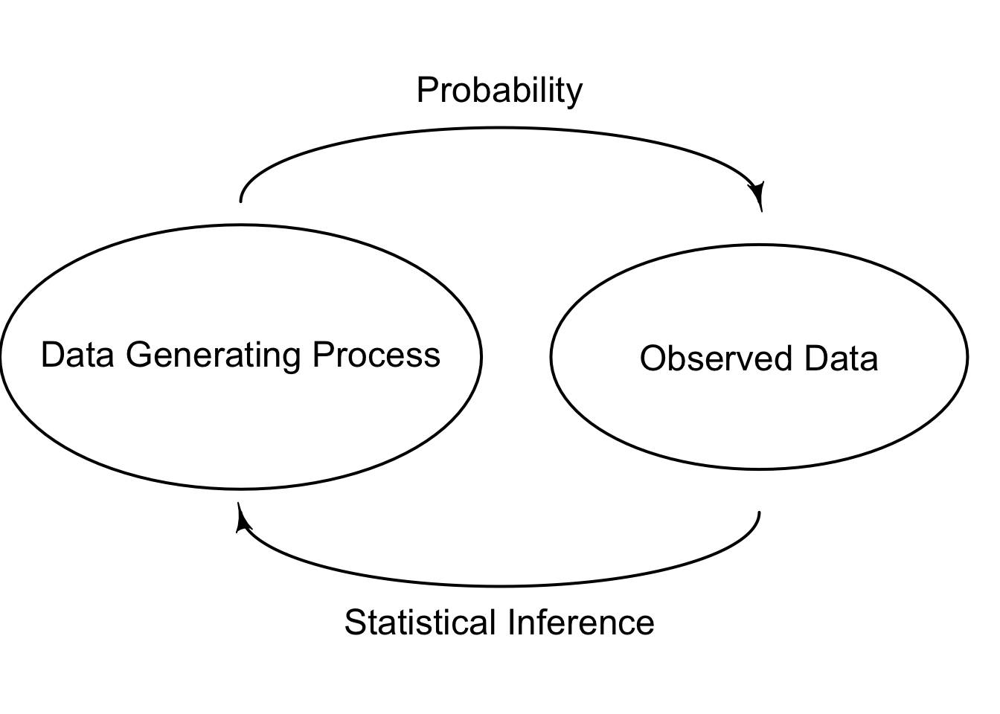

6 Definition of Probability
In this chapter, we define three types of probability. The good news is that probability operations and rules do not depend on the interpretation of probability. It is better to keep in mind which probability interpretation we use in the statistical analysis. Otherwise, the data analysis results may be misinterpreted.
6.1 Language of Uncertainty
Why Study Probability
It goes without saying that we live in a world full of chances and uncertainty. People do care about chances and usually make decisions given the information about some uncertain situations. Figure 6.1 shows the Google search result of “what are chances” on my personal computer on September 19, 2022. It looks like people are curious about getting pregnant, getting COVID of course at that time, and getting struck by lightning or tornado. And of course, it is the chance or uncertainty that makes so many games so fun, amusing and even additive, for example, the board game monopoly, and the gambling machines like slots and blackjacks.


Apparently most people want to quantify uncertainty about something happening, or measure the chances of some event happening for better decision making. The question is, how? We need a consistent way of measuring chances and uncertainty so that our society can be operated in order. Thanks to great enthusiasm for gambling, the mathematical study of chances starts quite early, and nowadays, the most formal and rigorous way of studying chances is to use probability. Therefore, we could probably view probability as the language of uncertainty.
Most of the time, we cannot do statistical inference or prediction using machine learning without probability because we usually assume our data at hand are random realizations from some targeted population that are described by a probability distribution. In other words, we are doing data analysis in the world of uncertainty. For example, we are interested in the mean height of Marquette female students, which is usually assumed to be bell-shaped distributed. By chances, our collected sample of girls may all have heights below 5’4”, which is not representative of the target population, and the sample mean is far from the true population mean height being interested. Examining the chance of getting such biased data set becomes important and helps us quantify the plausibility of the numerical results we obtain from the data.
As a result, before jumping into statistical inference or data analysis, we need to have basic understanding of probability definitions, rules, and operations that are frequently used in the data science community.
Why Probability Before Statistics?
Although probability and statistics are closely related and usually taught in one single introductory course, they are two distinct subjects. Since the randomness of sampling from the target population, statistical inference and data analysis usually involve uncertainty quantification, and hence probability is used in the analysis.
In a typical statistical analysis, we assume the target population, for example the Marquette students’ height follows some probability distribution, and the collected sample data are the realized data points from the distribution. With this, the population probability distribution is a mechanism that generates data. In probability theory, we examine how this mechanism generates data, and how the observed data will behave given the fact that they are from the probabilistic data generating process. For example, we assume the height follows some probability distribution, and we are curious about the probability that the sample mean is larger than 5’10”, or that the sample mean is between 5’6” and 5’11”.
In the probability theory, the process generating the data is assumed known and we are interested in properties of observations. However, in reality, the data generating process, or the target population distribution, is unknown to us, and is what we would like to infer to using the sample data we collect. For example, we want to estimate the unknown mean height of Marquette students using the data of 100 Marquette students sampled at random from the unknown target population distribution. This is what statistical inference is all about. For statistics, we observe the data (sample) and are interested in determining what process generates such data (population). These principles are illustrated below in Figure 6.5.

Even though the data generating process is fixed and unchanged every time a data set is collected, the data replicates are all different due to the random sampling from the population probability distribution. Such randomness creates the uncertainty about how we do the inference about the population properties because a different data set represents only a part of, and probably biased, information about the the whole distribution. As a result, when doing inference, we prefer probabilistic statements to deterministic statements.
6.2 Interpretation of Probability
Relative Frequency
There are several ways of interpreting probability. The first interpretation is relative frequency. Formally speaking, the probability that some outcome of a process will be obtained is interpreted as the relative frequency with which that outcome would be obtained if the process were repeated a large number of times independently under similar conditions.
Think about the following scenario. Your mom gave you a unfair coin, but she does not know the probability of getting heads when one tosses the coin. How do you obtain, or at least approximate the probability? Well, we can use the concept of relative frequency. First, we decide how many times we want to flip the coin. Each time after flipping the coin, we record either heads or tails shows up. Once we are done all the flips, we count the frequency or the total number of times heads shows up among all the flips. To obtain the probability of getting heads, we calculate the relative frequency, the ratio of the frequency of heads to the number of tosses.
Below is an example depicting the relative frequency of flipping a coin and getting heads or tails.
Frequency Relative Frequency
Heads 4 0.4
Tails 6 0.6
Total 10 1.0
---------------------
Frequency Relative Frequency
Heads 514 0.514
Tails 486 0.486
Total 1000 1.000
---------------------When we flip the coin 10 times, 4 of them end up being heads, and the probability of getting heads is 40%. You may be skeptical of the result, and want to have more replicates. Some day you have lots of spare time, and you decide to flip the coin 1000 times. The relative frequency, or the probability of getting heads, now becomes 51.4%.
Apparently, we don’t know the true probability if it does exist. And as you learned in the coin-flipping example, we don’t have one unique answer for that if we use relative frequency as the way of interpreting probability. In fact, there are some issues when we treat relative frequency as probability.
Issues with Relative Frequency
- üòï How large of a number is large enough?
There is no correct answer for how many replicates of the experiment we should have. We may think 10 times is not enough, but how about 1000 times? one million times? How well the relative frequency approximates the true probability depends on the complexity of the experiments. In general, the larger the number of times of repeating the process, the better the approximation of the relative frequency. This is the result of the so-called law of large numbers that is discussed in Chapter 12.
- üòï What is the meaning of ‚Äúunder similar conditions‚Äù?
In the definition, the experiment or process needs to be repeated “under similar conditions”. What does that mean? The definition itself is not rigorous enough. Do we need to control the airflow when the experiment is conducted? How about temperature? Can your mom and you take turns to flip the coin? Be honest, there is no answer for that.
- üòï Is the relative frequency reliable under identical conditions?
Can we trust the relative frequency when the experiment is conducted under identical conditions? If there is a skilled person who can control whether heads or tails shows up every time he flips a coin, should we believe the relative frequency is a good approximation to the true probability?
- üëâ We can only obtain an approximation instead of exact value for the probability.
You may already find out that the relative frequency is only an approximation instead of exact value for the probability. If we want to get the true probability (if it does exist), we need to get the relative frequency whose process is repeated infinitely many of times, which is unrealistic. Such probability stems from the frequentist philosophy that interprets probability as the long-run relative frequency of a repeatable experiment.
- üòÇ How do you compute the probability that Chicago Cubs win the World Series next year?
In the real world and our daily lives, lots of times we want to compute the probability of something happening where the something cannot be a repeatable process or experiment. For example, it is impossible to compute the probability that Chicago Cubs win the World Series next year because we would never to able to obtain the relative frequency of Chicago Cubs winning the World Series next year.

Classical Approach
Another interpretation of probability follows the classical approach, whose probability is based on the concept of equally likely outcomes. If the outcome of some process must be one of \(n\) different outcomes, the probability of each outcome is simply \(1/n\). For example, if you toss a fair coin (2 outcomes) ü™ô, the probability of getting heads is 1/2. If you roll a well-balanced die (6 outcomes) üé≤, the probability of each outcome being shown is 1/6. If you draw one from a deck of cards (52 outcomes) üÉè, the probability of each card being drawn is 1/52.
It wouldn’t make sense to say that the probability that [you name it] wins the World Series next year is 1/30. Even though there are 30 teams in the MLB, each team is not equally likely to win the World Series. Don’t you agree?!
Subjective Approach
The last interpretation of probability we discuss here is the subjective approach, whose probability is assigned or estimated using people’s knowledge, beliefs and information about the data generating process. In this case, it is a person’s subjective probability of an outcome, rather than the true probability of that outcome. For example, I think “the probability that the Milwaukee Brewers win the World Series this year is 30%”. My probability that the Milwaukee Brewers win the World Series this year is likely to be different from an ESPN analyst’s probability.

Here, a probability measures the relative plausibility of some event or outcome, and such probability stems from the so-called Bayesian philosophy. With this, we can claim that candidate A has a 0.9 probability of winning because the probability represents our plausibility or belief about the winning chance of the candidate A. A Bayesian statistician would say based on analysis the candidate A is 9 times more likely to win than to lose. For a statistician with the frequentist philosophy, he might say the statement is wrong or there is no such claim. Or he might weirdly say in long-run hypothetical repetitions of the election, candidate A would win roughly 90% of the time.
Note
Probability operations and rules do NOT depend on the interpretation of probability!